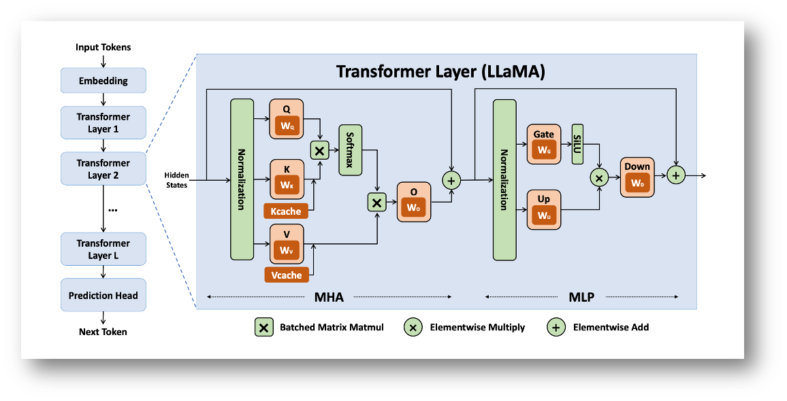
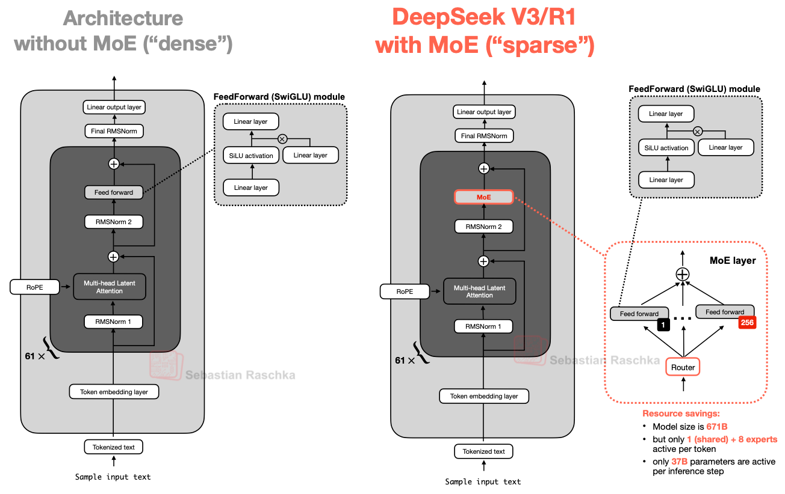
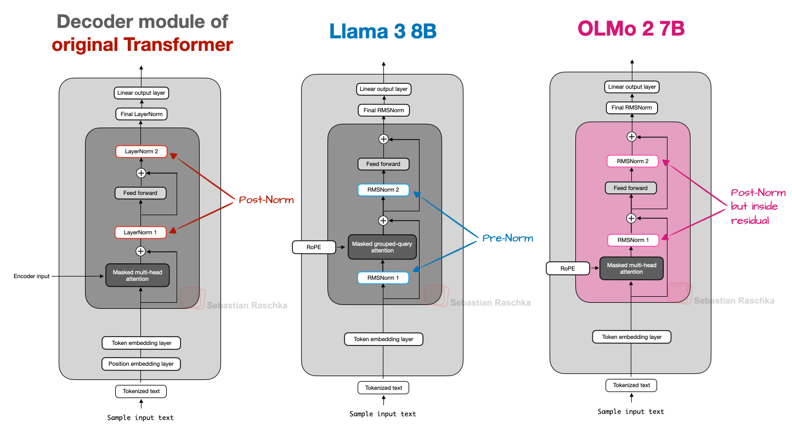
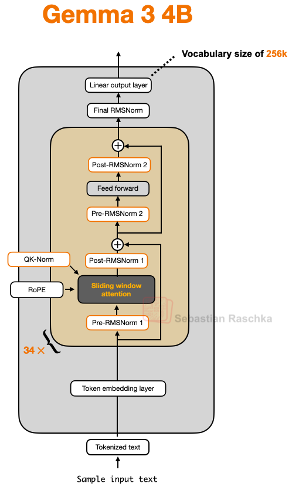
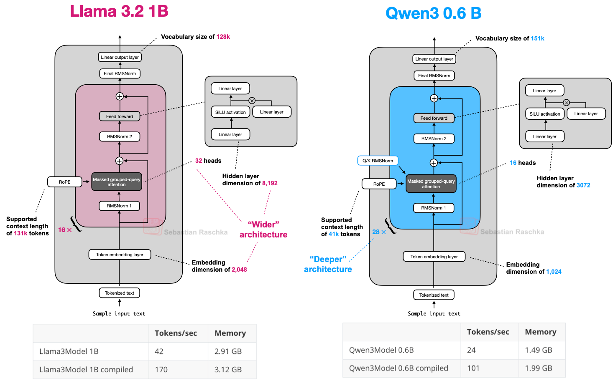

Representative LLM Architectures #
In this section, we introduce a set of representative architectures that underpin many modern large language models, with an emphasis on understanding how architectural design choices affect inference behavior and performance. We begin by studying the Llama family of models in detail, as these models provide a clean and widely adopted reference architecture and were among the first high-quality open-weight LLMs. The Llama architecture serves as a useful baseline for explaining core Transformer components such as attention, feed-forward layers, normalization, and autoregressive decoding, that recur across most LLMs. Building on this foundation, we then briefly survey other prominent model families, focusing only on the key architectural modifications relative to this baseline, such as the introduction of mixture-of-experts layers, alternative attention mechanisms, or multimodal extensions. The discussions on the salient features of the different models has been borrowed from this very informative blog from Sebastian Raschka.
Llama family of models #
The Llama family, including Llama (Feb 2023), Llama-2 (Jul 2023), Llama-3, 3.1, 3.2, 3.3 (Apr 2024 - Dec 2024), and Llama-4 (Apr 2025), are open-source, decoder-only transformer models developed by Meta. Their design choices significantly influenced the efficiency landscape of LLMs, making them highly relevant for discussing optimization.
The architecture introduced several key modifications specifically aimed at improving training stability and, most importantly, inference speed and memory footprint. For example,
-
RMSNorm (Root Mean Square Normalization): Llama uses RMSNorm instead of the standard LayerNorm (used in the original transformer). This variant removes the mean centering step and only scales the vector by its root mean square (RMS), i.e., $${\rm RMSNorm}(x) = \frac{x}{\sqrt{\frac{1}{d}\sum_{i=1}^{d}x_i^2 + \epsilon}}\gamma$$ Removing the mean calculation and bias addition in traditional LayerNorm, simplifies the overall operation and improves efficiency and speed during both training and ifnerence, often with negligible difference in final model quality.
-
Rotary Positional Embeddings (RoPE): RoPE encodes positional information by rotating the query and key vectors in each attention layer. It was desgined to enable the model to better extrapolate to longer context lengths – a crucial factor for serving long-running chat sessions or processing large documents.
-
Grouped Query Attention (GQA): Introduced in larger versions on Llama2 and adopted across the Llama3 family, GQA is perhaps the most significant inference optimization. Instead of having a separate key and value projection for every query head (as in MHA), GQA divides the query heads into groups that share a single K and V projection. The primary benefit is a drastic reduction in the size of the KV-Cache (the stored K and V vectors from previous tokens). This is critical because the KV-Cache is a major bottleneck for LLM memory consumption, scaling linearly with batch size, sequence length, and the number of layers. GQA allows for significantly faster sequential decoding (generating the next token) and higher throughput (more concurrent requests).
-
Mixture-of-Experts (MoE): Llama-4 transitions from a dense transformer to a Mixture-of-Experts (MoE) architecture. Instead of applying the same feed-forward block to every token, a learned router selects just a few specialized experts. This allows the model to scale to much larger parameter counts without increasing compute or latency proportionally.
The following is a snapshot of config.json for Llama 3.1 8b from HuggingFace:
{
"architectures": [
"LlamaForCausalLM"
],
"attention_bias": false,
"attention_dropout": 0.0,
"bos_token_id": 128000,
"eos_token_id": 128001,
"hidden_act": "silu",
"hidden_size": 4096,
"initializer_range": 0.02,
"intermediate_size": 14336,
"max_position_embeddings": 131072,
"mlp_bias": false,
"model_type": "llama",
"num_attention_heads": 32,
"num_hidden_layers": 32,
"num_key_value_heads": 8,
"pretraining_tp": 1,
"rms_norm_eps": 1e-05,
"rope_scaling": {
"factor": 8.0,
"low_freq_factor": 1.0,
"high_freq_factor": 4.0,
"original_max_position_embeddings": 8192,
"rope_type": "llama3"
},
"rope_theta": 500000.0,
"tie_word_embeddings": false,
"torch_dtype": "bfloat16",
"transformers_version": "4.43.0.dev0",
"use_cache": true,
"vocab_size": 128256
}
Calculating model size #
While the total parameter count (e.g., “8 billion parameters”) gives us a high-level idea of a model’s size, understanding where that memory is allocated within the architecture is crucial for true optimization. The total memory footprint of an LLM is the sum of the weights from every layer: the self-attention mechanism, the feed-forward network, and the embedding tables.

Transformer layers of the dense Llama architecture (credits: Yuan et. al., 2024)
In this section, we will use the Llama 3 8B model as our case study to perform a bottom-up calculation. We will systematically determine the size of the three primary components—the Embedding Layer, the Self-Attention Blocks, and the Feed-Forward Networks (FFN), and then sum these components to arrive at the total parameter count, demonstrating how a model’s architecture directly dictates its memory needs. This exercise will clarify the following:
- The relationship between the hidden dimension ($d_{\text{model}}$) and the overall model size.
- The overwhelming contribution of the FFN to the total parameter count.
Based on the config.json for Llama 3.1 8B, the following parameters are critical for calculating the total weights (parameters):
| Parameter | Symbol | Params |
|---|---|---|
| hidden_size | $d$ | 4096 |
| intermediate_size | $d_{\rm ff}$ | 14,336 |
| num_attention_heads | $H$ | 32 |
| num_hidden_layers | $N_{\rm layers}$ | 32 |
| num_key_value_heads | $G$ | 8 |
| vocab_size | $V$ | 128,256 |
The total number of parameters ($P_{\text{total}}$) is the sum of the parameters in the three main components: the Embedding Layer, the total Attention Blocks, and the total Feed-Forward Networks (FFN), i.e., $$P_{\text{total}} = P_{\text{embedding}} + P_{\text{LMhead}} + N_{\text{layers}} \times (P_{\text{attention}} + P_{\text{FFN}})$$
-
Embedding layer and LM head $(P_{\text{embedding}} \text{ and } P_{\text{LMhead}})$: The embedding layer converts the input token IDs into vectors of dimension $d_{\text{model}}$, i.e., $$P_{\text{embedding}} = V * d = 128,256*4096 = 525,336,576 = P_{\text{LMhead}}$$
-
Self-Attention block $(P_{\text{attention}})$: The attention block contains the linear projection matrices for Query ($W_Q$), Key ($W_K$), Value ($W_V$), and the final Output ($W_O$) projection. Llama 3 uses Grouped-Query Attention (GQA), which changes the size of $W_K$ and $W_V$ compared to standard Multi-Head Attention (MHA).
- Query ($W_Q$): Each of the $H$ query heads requires a matrix of size $d \times (d/H)$, and there are $H$ of them. Total size: $d \times d$.
- Key/Value ($W_K, W_V$): Each of the $G$ key/value heads requires a matrix of size $d \times (d/H)$, and there are $2G$ of them. The effective dimension is $d \times (G \times d_{\text{head}})$, where $d_{\text{head}} = d/H$.
- Output ($W_O$): Projects the concatenated attention output back to $d$ and has shape $d \times d$. So, $$P_{\text{attention}} = d^2 \left(1 + \frac{2G}{H} + 1\right) = 41,943,040.$$
-
Feed-forward network $(P_{\text{FFN}})$: The FFN uses SwiGLU activation, which involves three linear layers, $W_{gate}, W_{up} \in \mathbb{R}^{d \times d_{\rm ff}}$, and $W_{down} \in \mathbb{R}^{d_{\rm ff} \times d}$. Note that the total parameters from the FFN are usually the largest component in a Transformer block, and is given by $$P_{\text{FFN}} = 3\cdot d \cdot d_{\rm ff} = 176,160,768.$$
So, the total number of parameters adds up to $$P_{\text{total}} = 525,336,576 + 32 * (41,943,040 + 176,160,768) \approx 8\text{B}.$$
Takeaway – Informing Inference Optimization #
This component-wise calculation reveals the true distribution of memory within the LLM’s architecture, which directly informs our optimization strategy:
-
Prioritizing FFN Optimization: Our calculation shows that the Feed-Forward Networks (FFN) are the dominant memory and compute consumer in the model (contributing roughly 4 times the parameters of the attention block per layer). Consequently, optimization techniques that target the FFN—such as highly efficient quantization schemes, yield the most significant overall memory savings and corresponding latency reductions. As a matter of fact, more recent models like Llama-4 and GPT-OSS replace the FFN layer with MoE layers, and the weights are natively quantized to FP8 and MXFP4 formats, respectively, using Quantization-Aware training.
-
Attention vs. Compute Trade-off: While the FFN determines the bulk of the weight memory, the Attention Block (especially its output, the KV-Cache) dictates the activation memory required during generation. Techniques like Grouped-Query Attention (GQA) and PagedAttention are critical for managing the attention component, particularly for long sequence lengths or large batch sizes, as their primary goal is to minimize the KV-Cache footprint, which is the key bottleneck for throughput.
In short, understanding this architectural breakdown allows us to strategically apply memory-saving techniques where they will have the maximum impact: focusing on FFN for static model size reduction (quantization) and on the attention mechanism for dynamic generation speed and throughput (KV-Cache management).
DeepSeek V3/R1 #
The DeepSeek family of models (which gained popularity in Dec 2024 - Jan 2025) introduces several notable architectural departures from the standard dense Transformer design exemplified by Llama, with a strong emphasis on scaling model capacity while keeping inference costs manageable. At a high level, DeepSeek models replace large portions of the dense FFN with MoE layers, allowing the model to significantly increase total parameter count while activating only a small subset of parameters per token during inference. This design enables substantially higher representational capacity without a proportional increase in inference FLOPs. The differences compared to a dense model are visualized below:

DeepSeek with MoE and MLA modules (credits: Sebastian Raschka)
A key design choice in DeepSeek is the use of fine-grained MoE layers with a large number of relatively small experts, combined with sparse routing that selects only a few experts per token (e.g., top-k routing). Compared to dense FFNs, this introduces sparsity into the computation graph, which has important implications for inference systems: expert parallelism becomes a first-class concern, communication patterns such as all-to-all become performance-critical, and load balancing across experts directly affects latency and throughput. To stabilize training and inference behavior, DeepSeek also incorporates shared experts that are always active, ensuring a common representational backbone even when routed experts differ across tokens.
In addition to MoE in the FFN blocks, DeepSeek introduces Multi-Head Latent Attention (MLA) as an alternative to standard multi-head attention. MLA compresses the key and value representations into a lower-dimensional latent space before projecting them back to per-head representations. From an inference perspective, this modification directly reduces the memory footprint and bandwidth requirements of the KV cache, which is often the dominant bottleneck during autoregressive decoding. By decoupling the number of attention heads from the KV cache size, MLA enables DeepSeek models to scale attention capacity while keeping decoding memory costs under control.
OLMo series of models #
The OLMo models, from allen Institute for AI, were popular when they wre released in Jan 2025, primarily due to their transparency and reproducibility rather than introducing fundamentally new architectural primitives. One of the most notable modifications in Olmo 2 is its treatment of normalization layers and attention normalization. Like other modern LLMs, Olmo replaces the traditional LayerNorm with RMSNorm to reduce parameter count and simplify computations. However, Olmo places its RMSNorm after the attention and feed-forward modules, and inside the residual connection (as depcited in the figure below). This report mentions that this rearrangement helps stabilize training dynamics on very large models, smoothing gradient flow and making optimization more robust without materially changing the inference computations.

A comparison of the placements of RMSNorm layers scross different model families (credits: Sebastian Raschka)
In addition, Olmo applies a QK-norm (originally introduced in this paper), which is an extra RMSNorm on the query and key vectors inside the attention block—before positional rotations like RoPE. This focused normalization strategy further improves training behavior and conditioning. QK-norm is used in the Gemma family of models (discussed next) as well.
Gemma family of models #
Gemma 3 was released by Google DeepMind in Aug 2025, and has a rather large vocabulary size of 256K. One of the distinctive design choices in Gemma 3 is the use of a sliding window attention (SWA) mechanism. SWA was introduced in the Longformer paper. SWA is a local attention mechanism in which the context size is restricted to a small window (of size 1024 or 4096) around the current query position. It can be used with both MHA and GQA, but Gemma 3 uses GQA. Gemma-3 has one full attention later for every 5 sliding window attention layers. SWA is discussed in details later in Sec. 2.
Another salient feature of Gemma 3 is that unlike strictly Pre-Norm or Post-Norm designs, Gemma’s architecture uses RMSNorm in a hybrid placement around attention and feed-forward modules. The intuition behind this is to use the best-of-both-worlds, and has minimal impact on the inference latency. This architecture is visualized below:

Architecture of Gemma3 (credits: Sebastian Raschka)
Another notable model in the Gemma family is Gemma 3n – an open-weight multimodal generative AI model from Google designed to run efficiently on everyday devices such as phones, tablets, laptops, and other resource-constrained hardware — not just large cloud GPUs. Gemma 3n’s architecture and execution strategy are tailored for “edge” deployment, and the salient architectural features include:
- Matryoshka Transformer (MatFormer) Architecture: A nested/“Russian-doll” design that enables selective activation of parameters. This architecture lets the model operate with varying effective parameter footprints depending on task and device capacity — effectively executing a smaller or larger sub-model within the same network.
- Per layer embedding (PLE) caching Gemma 3n models also include Per-Layer Embedding (PLE) parameters that are used during model execution to create data that enhances the performance of each model layer. The PLE data can be generated separately, outside the operating memory of the model, cached to fast storage, and then added to the model inference process as each layer runs. This approach allows PLE parameters to be kept out of the model memory space, reducing resource consumption while still improving model response quality.
Qwen family of models #
The Qwen family, developed by Alibaba, is a suite of decoder-only models spanning dense LLMs, multiomodal models, and MoE variants. There are 7 dense models: 0.6B, 1.7B, 4B, 8B, 14B, and 32B. And there are 2 MoE models: 30B-A3B, and 235B-A22B. The Qwen family became popular due to their strong performance on leaderboards. Having both dense and MoE versions lets users choose between:
- Dense: simpler, easy to fine-tune/deploy (especially, Qwen3 0.6B – which is small enough to fine-tune in low-resource settings).
- MoE: high model capacity with relatively efficient inference cost by activating only a subset of experts.
Notably, the Qwen3 MoE design dropped the “shared expert” used in some earlier MoE setups (like DeepSeek’s), instead activating only the selected experts per token (reason not obvious). Compared to Llama 3.2 1B, Qwen3 0.6B has a deeper backbone, and hence, the leads to fewer tokens generated per second.

Qwen3 is a deeper architecture with more layers, whereas Llama 3 is a wider architecture with more attention heads. (credits: Sebastian Raschka)
Beyond the core Qwen3 backbone, there are specialized variants with architectural extensions:
- Qwen3-Next: Introduces architectural innovations such as hybrid attention mechanisms, advanced sparse MoE scaling, and multi-token prediction optimizations to improve inference efficiency and training stability.
- Multimodal/Long-Context Variants:
- Qwen3-VL: Vision-language models with unified token treatment of text and visual features and support for very long contexts and multimodal reasoning.
- Qwen3-Omni: Multimodal text/audio/video LLM for comprehensive perception and generation across modalities.
References #
- Yuan et. al., LLM Inference Unveiled: Survey and Roofline Model Insights, 2024 https://arxiv.org/pdf/2402.16363
- The big LLM architecture comparison https://magazine.sebastianraschka.com/p/the-big-llm-architecture-comparison
- DeepSeek-V3 Technical Report https://arxiv.org/abs/2412.19437
- 2 OLMo 2 Furious https://arxiv.org/abs/2501.00656
- Dehghani et al., Scaling Vision Transformers to 22 Billion Parameters https://arxiv.org/abs/2302.05442
- Gemma 3 Technical Report https://arxiv.org/abs/2503.19786
- Longformer: The Long-Document Transformer https://arxiv.org/abs/2004.05150
- MatFormer: Nested Transformer for Elastic Inference https://arxiv.org/abs/2310.07707
- Google AI docs https://ai.google.dev/gemma/docs/gemma-3n